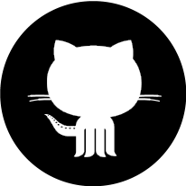

Original idea
The original idea behind the project was to create a simple Linux tool for fast searching and executing Linux command examples from a database which needed to be comprehensive,
easily accessible and editable by the community, enabling end users to create personal copies, append new examples to existing databases and add command descriptions into the official database.

GitHub as backend
The development of the Xmpl tool is based on GitHub as a backend for all parts Xmpl project. Xmpl tool uses GitHub as a database for all of the examples with which Xmpl tool should handle.
All parts of Xmpl project are organized under GitHub by organization xmpl-tool. xmpl-tool organization evaluates and approves changes of the examples that users want to share with the rest of the community.
It instantly allows anyone who has a GitHub account to easily add or change examples in the database, as well as the transparency of all repository changes.
Also the development of Xmpl tool itself is monitored using GitHub's VCS and is organized with the GitHub's project management system.
The project website is hosted on GitHub and it uses the free github.io domain for project purposes.
It instantly allows anyone who has a GitHub account to easily add or change examples in the database, as well as the transparency of all repository changes.
Also the development of Xmpl tool itself is monitored using GitHub's VCS and is organized with the GitHub's project management system.
The project website is hosted on GitHub and it uses the free github.io domain for project purposes.
Project goals
Our main goal is to present the project to the open source community and to attract as many Linux users as possible, thus creating a community that supports the idea and wants to participate in its development.
After creating a database with helpful Linux examples and developing tools to fetch, organize and execute examples, we would like to collaborate with other well-known open source projects and communities that support the idea and can help in the advancement of the project.
Also, we plan to organize workshops and lectures related to the Xmpl project in order to increase the size of the community, promote the Xmpl project, open source and Linux. This will also enable the users to directly participate in the project development, to meet each other, exchange experiences, and gain new knowledge and skills.
After creating a database with helpful Linux examples and developing tools to fetch, organize and execute examples, we would like to collaborate with other well-known open source projects and communities that support the idea and can help in the advancement of the project.
Also, we plan to organize workshops and lectures related to the Xmpl project in order to increase the size of the community, promote the Xmpl project, open source and Linux. This will also enable the users to directly participate in the project development, to meet each other, exchange experiences, and gain new knowledge and skills.